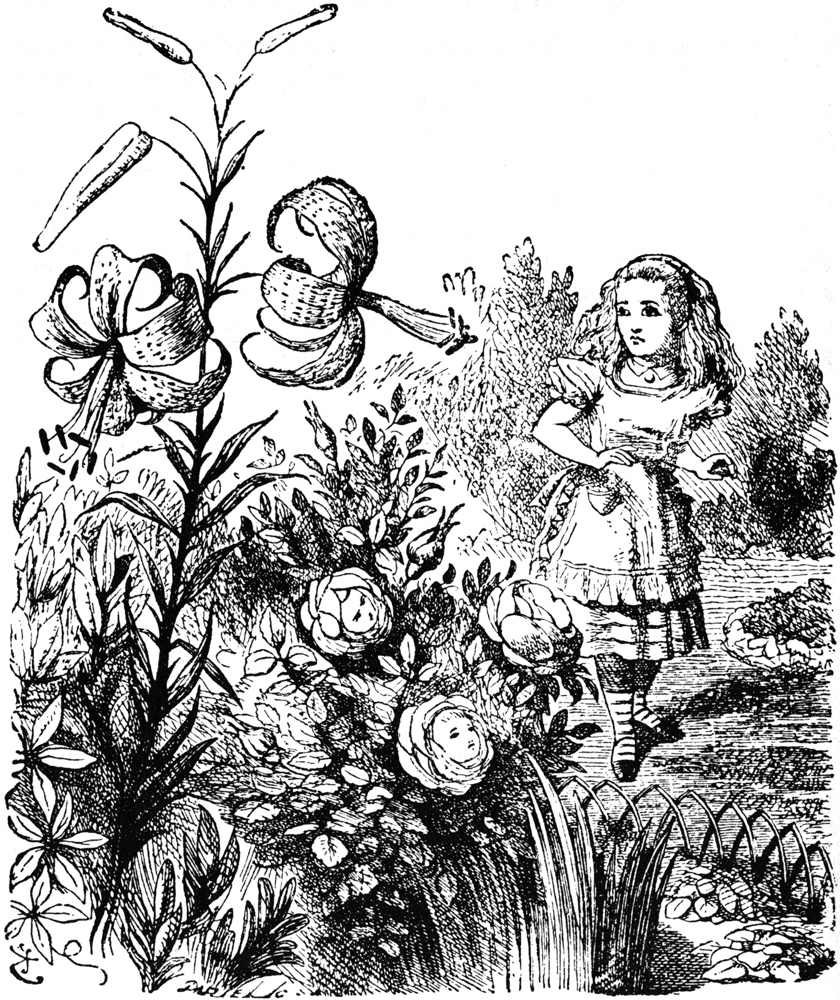

‘Silence, every one of you!’ cried the Tiger-lily, waving itself passionately from side to side, and trembling with excitement. ‘They know I can’t get at them!’ it panted, bending its quivering head towards Alice, ‘or they wouldn’t dare to do it!’
‘Never mind!’ Alice said in a soothing tone, and stooping down to the daisies, who were just beginning again, she whispered, ‘If you don’t hold your tongues, I’ll pick you!’
- Through the Looking Glass. Chapter 2. Lewis Carroll
Often the data we want is not available readily in a form we can import into R. It may be available as part of a table on a webpage, or even on several webpages that require human interaction to navigate, view, and copy. These operations can be automated to a great extent ( based on the complexity of the website) and the resulting data neatly made available as a tibble in a R session.
We will learn about the rvest package to scrape data from static
pages, and then the RSelenium package to obtain data from interactive
websites.
knitr::opts_chunk$set(message = FALSE)
library(tidyverse)## ── Attaching core tidyverse packages ──────────────────────── tidyverse 2.0.0 ──
## ✔ dplyr 1.1.4 ✔ readr 2.1.5
## ✔ forcats 1.0.0 ✔ stringr 1.5.1
## ✔ ggplot2 3.5.1 ✔ tibble 3.2.1
## ✔ lubridate 1.9.3 ✔ tidyr 1.3.1
## ✔ purrr 1.0.2
## ── Conflicts ────────────────────────────────────────── tidyverse_conflicts() ──
## ✖ dplyr::filter() masks stats::filter()
## ✖ dplyr::lag() masks stats::lag()
## ℹ Use the conflicted package (<http://conflicted.r-lib.org/>) to force all conflicts to become errorslibrary(rvest)##
## Attaching package: 'rvest'
##
## The following object is masked from 'package:readr':
##
## guess_encodinglibrary(RSelenium)